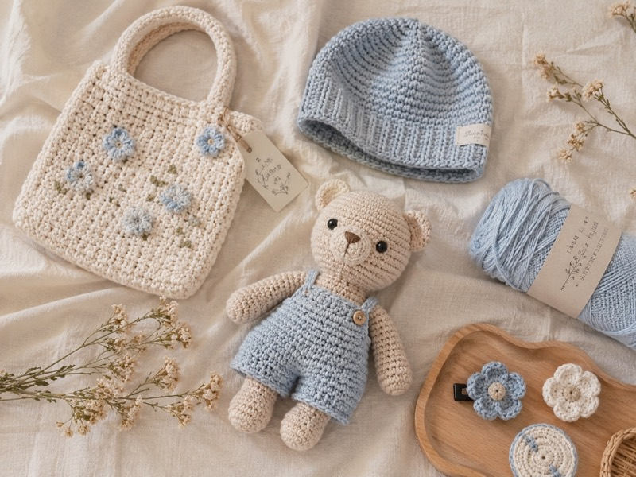

Quà handmade · Chăm đồ len
Cách bảo quản thú len handmade để luôn đẹp
Thú len handmade sẽ ở bên bạn lâu hơn nếu được giữ sạch, tránh ẩm, tránh nắng gắt và được nâng niu đúng cách.

Vì sao thú len handmade cần được chăm nhẹ nhàng?
Thú len handmade được tạo từ từng mũi móc, phần bông nhồi và các chi tiết nhỏ như mắt, tai, má, nơ hoặc phụ kiện. Vì vậy, bé không cần chăm quá phức tạp, nhưng cần được giữ đúng cách để luôn sạch, mềm và không bị mất form.
Nếu bạn vừa mua một bé thú len làm quà, để bàn học, treo túi hoặc đặt ở góc phòng, vài thói quen nhỏ dưới đây sẽ giúp bé xinh lâu hơn rất nhiều.
Cách vệ sinh thú len handmade nhẹ nhàng
Phủi bụi thường xuyên
Nếu thú len chỉ bị bụi nhẹ, bạn có thể dùng cọ mềm, khăn khô mềm hoặc máy thổi bụi chế độ nhẹ để làm sạch bề mặt. Nên thao tác chậm, tránh chà mạnh vào các chi tiết nhỏ.
Lau nhẹ khi có vết bẩn nhỏ
Với vết bẩn nhỏ, hãy dùng khăn ẩm vắt thật ráo rồi chấm nhẹ lên vùng cần làm sạch. Sau đó dùng khăn khô thấm lại và để bé khô tự nhiên ở nơi thoáng mát.
Hạn chế giặt máy
Giặt máy có thể làm thú len bị xù, méo form hoặc lỏng các chi tiết được ráp thủ công. Nếu thật sự cần giặt, bạn nên ưu tiên giặt tay thật nhẹ, không vò mạnh và không vắt xoắn.
Tránh bụi, ẩm và nắng gắt
Giữ thú len ở nơi khô thoáng
Độ ẩm cao có thể làm đồ len dễ có mùi hoặc lâu khô khi bị ướt. Bạn nên đặt thú len ở nơi thoáng, sạch, tránh góc tường ẩm hoặc khu vực gần nước.
Tránh ánh nắng trực tiếp quá lâu
Nắng gắt có thể làm màu len nhạt dần theo thời gian, nhất là với những bé có màu pastel hoặc màu đậm. Nếu trưng bày trên kệ, bạn nên chọn chỗ có ánh sáng dịu thay vì nắng chiếu trực tiếp cả ngày.
Cất trong túi hoặc hộp khi chưa dùng
Nếu chưa trưng bày ngay, bạn có thể để thú len trong túi vải, túi zip thoáng hoặc hộp sạch. Cách này giúp hạn chế bụi, đặc biệt với những bé thú len màu sáng.
Cách giữ form thú len luôn đẹp
Không đè nặng lên thú len
Thú len có bông nhồi bên trong nên nếu bị ép lâu dưới vật nặng, form có thể bị bẹt hoặc lệch. Khi để trong túi, vali hoặc hộp quà, bạn nên đặt bé ở vị trí thoáng và không bị chèn quá mạnh.
Nắn form nhẹ bằng tay
Nếu bé hơi méo sau khi vận chuyển, bạn có thể dùng tay sạch nắn nhẹ phần đầu, thân, tai hoặc tay chân về dáng ban đầu. Hãy nắn từ từ, không kéo mạnh các mối ráp.
Tránh kéo phụ kiện nhỏ
Các chi tiết như nơ, hoa, tai, đuôi, móc khóa hoặc mắt thú nên được giữ nhẹ nhàng. Kéo mạnh nhiều lần có thể làm lỏng chỉ ráp hoặc làm chi tiết bị lệch.
Nếu thú len bị ướt thì nên làm gì?
Đầu tiên, bạn dùng khăn khô thấm nhẹ để hút bớt nước. Sau đó đặt thú len ở nơi thoáng gió, tránh phơi dưới nắng gắt hoặc dùng nhiệt nóng trực tiếp quá gần.
Khi bé còn ẩm, đừng cất vào hộp kín ngay. Hãy chờ khô hẳn rồi mới cất hoặc trưng bày lại để tránh mùi ẩm.
Mẹo nhỏ cho khách đã mua thú len handmade
- Để thú len ở kệ sạch, bàn học hoặc góc decor ít bụi.
- Phủi bụi định kỳ bằng cọ mềm thay vì đợi bẩn nhiều mới vệ sinh.
- Không xịt nước hoa, cồn hoặc dung dịch tẩy trực tiếp lên len.
- Khi tặng quà, nên giữ bé trong hộp hoặc túi sạch trước ngày trao.
- Nếu có chi tiết bị lỏng, hãy nhắn shop để được tư vấn cách xử lý phù hợp.
Một chút về LenTiny
LenTiny làm đồ len handmade, thú len, quà tặng bằng len và nhận móc theo yêu cầu. Tiny luôn mong mỗi bé thú len khi đến tay bạn sẽ được yêu thương thật lâu, không chỉ như một món đồ trang trí mà còn như một kỷ niệm nhỏ mềm mại.
Cần Tiny tư vấn cách chăm bé len của bạn?
Nếu thú len bị bẩn, méo form hoặc bạn muốn đặt thêm một bé mới làm quà, nhắn Tiny để được tư vấn nhẹ nhàng nha.